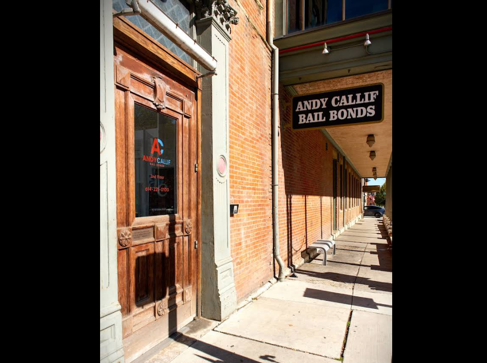

Bail Consultation For Columbus Residents
When release options are being considered, understanding the process can make conversations with legal counsel and service providers more productive. Columbus Ohio Bail Bonds may be one resource for learning about general bond procedures, while Columbus Ohio Bail Bonds can help frame questions about eligibility, timing, and the information a provider may request.
Each case follows its own circumstances, and available options can depend on court decisions and applicable requirements. Before agreeing to any arrangement, review the written terms carefully, ask how fees and payment schedules work, and clarify what could happen if court obligations are not met. Columbus Ohio Bail Bonds may help explain common service terms, and Columbus Ohio Bail Bonds can support a more informed discussion with a qualified provider.
Reliable guidance can help families compare choices without rushing into a commitment. Keep copies of relevant paperwork, make note of important deadlines, and consult an attorney for advice about the case itself. Columbus Ohio Bail Bonds can be part of gathering practical information while decisions are made.

Court Approved Bond Providers Columbus
Selecting a bond provider requires attention to licensing, availability, fee disclosures, and the terms of any agreement. Columbus Ohio Bail Bonds can be used as a starting point for comparing providers, verifying service areas, and identifying questions about payment arrangements. Before moving forward, request a clear explanation of collateral requirements, refund policies, and the responsibilities assigned to every signer. Columbus Ohio Bail Bonds may also help families understand how communication, documentation, and follow-up obligations are handled throughout the process.
A reputable provider should explain its services in plain language and provide written information before asking for a commitment. Columbus Ohio Bail Bonds can help consumers evaluate whether a company offers responsive support and transparent pricing. It is also useful to confirm how the provider coordinates with courts, detention facilities, attorneys, and other authorized parties. Columbus Ohio Bail Bonds may be relevant when comparing response times, administrative procedures, and the availability of assistance outside standard business hours.
Because financial and legal consequences can vary, decisions should be based on verified information and professional guidance suited to the circumstances. Read every document carefully, keep copies of receipts and agreements, and ask about deadlines or conditions that could affect the person released. Columbus Ohio Bail Bonds can support a more informed comparison, while an attorney or official court resource can address questions that require case-specific advice.
Support During Columbus Arraignments
An arraignment can bring unfamiliar procedures and important decisions in a short time. Columbus Ohio Bail Bonds may help families understand what typically happens in court, while Columbus Ohio Bail Bonds can point them toward practical information about preparing for the hearing. The judge may explain the charges, address legal representation, and set conditions for what happens next.
Careful preparation can make it easier to follow the proceeding and communicate clearly with counsel. Columbus Ohio Bail Bonds can provide context about common court terminology, and Columbus Ohio Bail Bonds may help people identify the questions they want to raise with an attorney. Having relevant documents and contact details organized can also reduce confusion during a stressful day.
Each case moves according to its own facts, court schedule, and applicable law. Columbus Ohio Bail Bonds can be one source of general guidance, but an attorney familiar with the case is best positioned to explain legal options and responsibilities. Staying attentive to court instructions and future dates helps people remain informed as the matter proceeds.
Andy Callif Bail Bonds
Andy Callif Bail Bonds
350 S High St, Columbus, OH 43215
(614) 858-8771